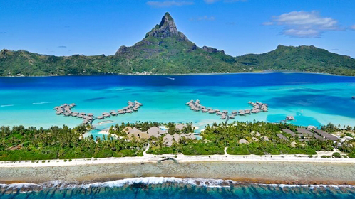
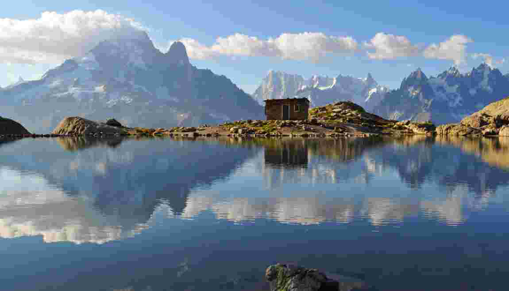
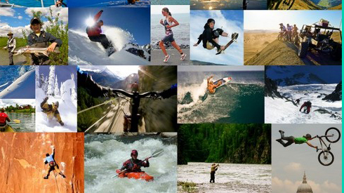

Vous semblez rechercher dans les voyages, votre lot d’aventures et de découvertes sur le chemin. Sans doute
friand de treks en Corse, de safaris au Kenya, ou de road-trip dans les parcs nationaux,
vous y préparer vous procure des frissons d’excitation. Toutefois, vous aimez peut-être aussi conjuguer évasion
avec organisation et faire appel à un voyagiste ; ce qui vous permet d’être disponible
à l’incroyable beauté des sites. Vous vous réjouissez d’avance de ces d’escales hors du temps !
En mode Paradisiaque:

Avez-vous déjà fait un voyage dans une île paradisiaque ? Ciel bleu, cocktails, douceurs sur la plage, sable
fin, baignade, coucher de soleil…
Ne laissez plus la carte postale de rêve titiller votre imaginaire. Venez vivre l’île paradisiaque et
profiter de ses beautés enchanteresses.
Vous reviendrez envouté(e). A vous de choisir votre île paradisiaque mais aussi celui ou celle qui croquera…
dans la noix de coco !
Prendre de l'Altitude:

Fini les bains de foule et la pollution, avec des vacances à la montagne, vous retrouvez le calme des
forêts.
Les stations de ski se reconvertissent pour une saison verte et mettent à votre disposition de nombreux
services pour assurer votre confort
Repousser ses limites:

Nombreuses sont les personnes cherchant l’adrénaline et les sensations fortes au travers d’activités parfois
complètement dingues, pour lesquelles il faut absolument avoir le cœur bien accroché… Voici la liste des
activités extrêmes à faire au moins une fois dans sa vie !